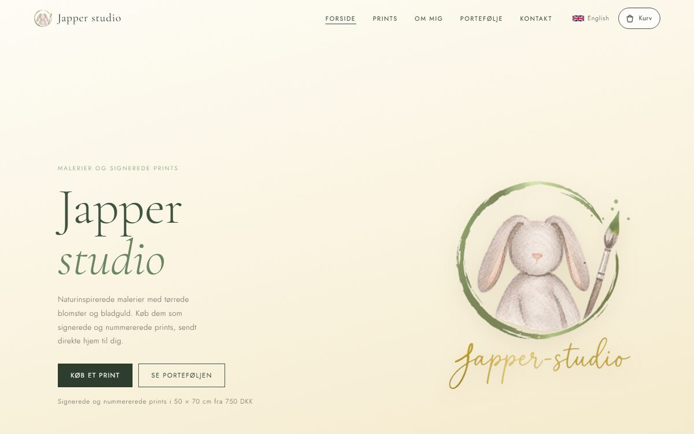
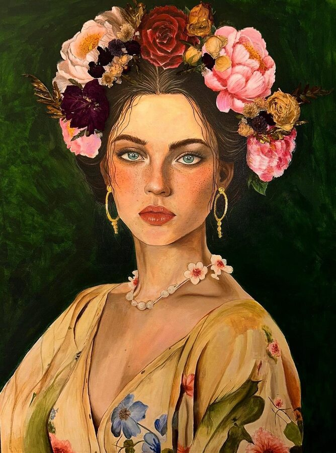
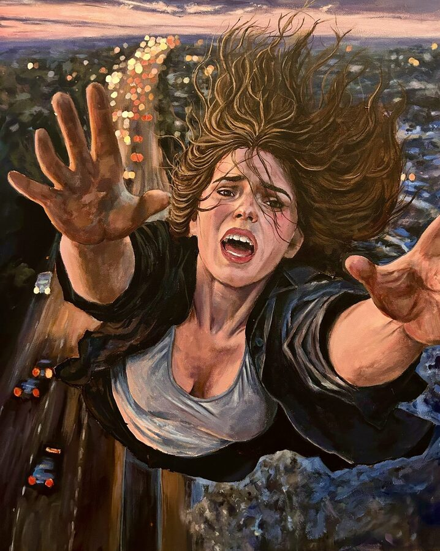
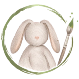

Japper Studio
A web shop and online gallery for Japper Studio, the atelier of Danish painter Laura Kruuse. Her nature-inspired paintings are made with dried flowers and gold leaf, and the site sells them as signed, numbered prints in 50 × 70 cm.
- Print shop with cart, quantities, and a choice of delivery or free pickup in Odense
- A walk-through portfolio where the paintings hang on a wall like in a real gallery, each with the story behind it
- Sketches and studies pinned to a board, with a larger view on click
- Danish and English versions, an about page in Laura's own words, and a contact form
My role: Sole designer and developer. Artwork, photos and texts by Laura Kruuse, with the structure and tone worked out together.